PrefGeo
Generalizing Preference Learning Across Contexts via Geometric Reward Factorization
Paper under double-blind review·ICLR 2027
PrefGeo recovers a reusable reward basis from independently estimated per-context rewards via minimum-volume unmixing in a preference-induced Fisher geometry. A new task or user is then learned by reweighting that basis from just a handful of preference labels.
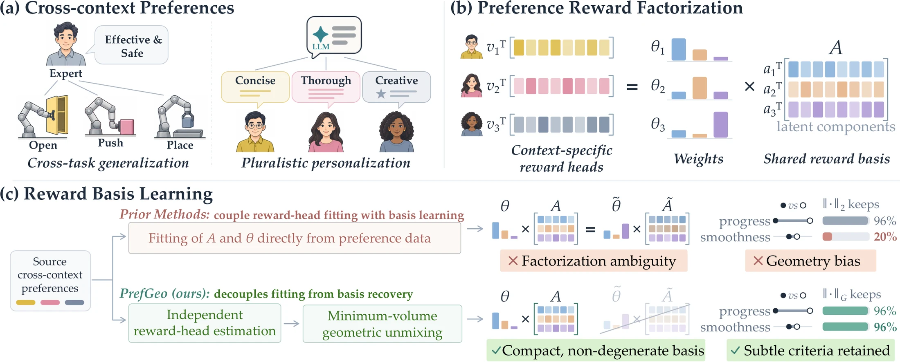
Preference-based reinforcement learning is a popular paradigm for aligning AI models with human intent, but generalizing it to a new context, whether an unseen task or a new user, typically requires substantial additional feedback. In this work, we introduce PrefGeo, a geometric reward factorization framework for efficient preference learning across contexts. Unlike prior methods that fit a shared reward basis directly from preference data, PrefGeo recovers it from independently estimated context-specific rewards via regularized minimum-volume unmixing in a preference-induced Fisher geometry, capturing reusable preference structure. A new context is then adapted by updating only low-dimensional mixture weights. We evaluate PrefGeo on cross-task generalization in robotic manipulation, with both conventional policies and vision-language-action models, and on cross-user personalization in large language models and assistive human-robot interaction. PrefGeo consistently outperforms baselines in preference alignment and downstream task performance, especially when target feedback is scarce. Real-robot experiments and an assistive-feeding user study confirm its effectiveness in the real world.
PrefGeo in Action
Policies adapted to unseen tasks and users from only a handful of preference labels, on real robots and in simulation.
Real World Real robot
Simulation Benchmarks
Predict, Unmix, Remix
Preference reward factorization writes each context's reward as \(R_c(x) = \theta_c^{\top} A\, z(x)\): a shared basis \(A\) of \(K\) reward components, mixed by context-specific weights \(\theta_c\). Adapting to a new context then needs only \(K\) numbers. The hard part is recovering a basis that actually transfers.
Factorization ambiguity
Prior methods learn \(A\) and \(\theta_c\) end-to-end from source preferences. Many different bases reproduce the same source rewards, \(A^{\top}\theta_c = \tilde A^{\top}\tilde\theta_c\), yet behave differently when transferred to a new context.
PrefGeo: decouple reward estimation from basis recovery, and pick the most compact, non-degenerate basis via minimum-volume unmixing.
Illustration
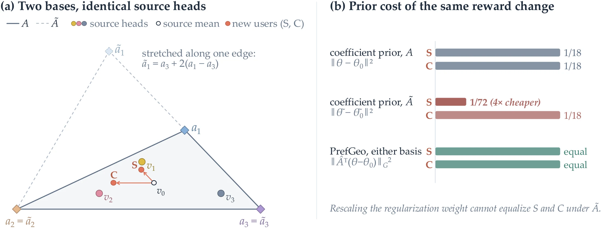
Geometry bias
Comparisons reveal reward directions unevenly. Under Euclidean criteria, a criterion that compared behaviors differ in only subtly (e.g., smoothness) gets suppressed, even if it matters as much as the others.
PrefGeo: measure reward differences by their effect on preference predictions, using the Fisher information of the Bradley–Terry model.
Illustration
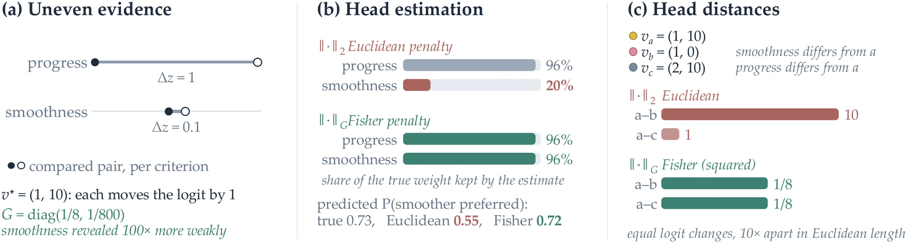
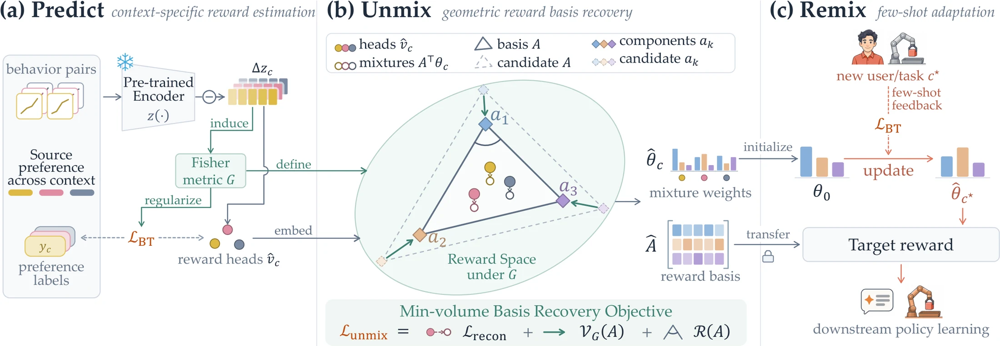
Predict
context-specific reward estimationEncode each behavior with a frozen encoder \(z(x)\). Fit one linear reward head per source context from its own labels, regularized under the shared Fisher metric \(G\), which weights each direction by how strongly comparisons actually probe it.
\(\|\delta v\|_G^2=\tfrac{1}{4M}\sum_m(\delta v^{\top}\Delta z_m)^2\): the average squared change in comparison logits.
Unmix
geometric reward basis recoveryTreat the fitted heads as fixed points, and recover \(K\) components as simplex vertices whose convex mixtures reconstruct them. Among all such simplices, prefer the one with minimum Fisher volume, with scale-anchoring and coherence penalties to prevent collapse.
subject to \(\theta_c\ge 0,\ \mathbf 1^{\top}\theta_c=1\).
Remix
few-shot adaptationFreeze the basis. For a new task or user, start from the average source mixture \(\theta_0\), which already gives a zero-shot reward, and update only the \(K\) mixture weights from a few target comparisons.
Measured in reward space, so the prior does not depend on how the basis is parameterized.
Generalizing to Unseen Tasks and Users
Six benchmarks across robot manipulation (classic policies and VLAs), assistive human-robot interaction, and LLM personalization, plus real-robot experiments and a user study.
Real-robot VLA success, averaged over 4 held-out tasks, with 20 target labels each
LIBERO-Goal success of π0.5, averaged over 10 held-out tasks (LoRe: 55.7%)
Best-of-N win rate on Assistive Feeding for unseen users (next best: 69.3%)
Lowest NLL on every personalization benchmark, and highest win rate on all three where it applies
Cross-task generalization
On Meta-World, each target task is paired with four source tasks such that neither the target object nor the target action appears in the sources. PrefGeo is the only transfer method that beats PrefCLM, which uses zero-shot feedback from a frontier model. It nearly matches SAC trained on the ground-truth reward, and outperforms PrefGT, which uses 500× more ground-truth target labels, on four of five tasks.
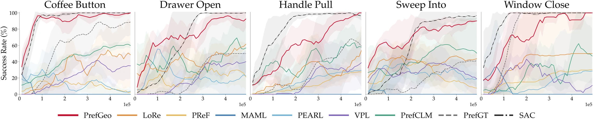
On LIBERO-Goal, each of the ten tasks is held out in turn while the other nine serve as sources. A pre-trained π0.5-base is then fine-tuned with the adapted reward using 20 target labels.
PrefGeo raises the average success rate from 51.6% to 74.7% and improves every task, including T8, where both the base policy and LoRe fail completely.
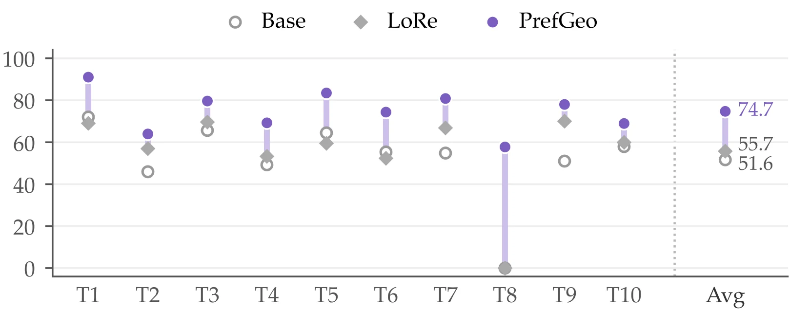
Pluralistic personalization
For unseen users on three LLM benchmarks and simulated assistive feeding, PrefGeo achieves the lowest NLL everywhere. Accuracy only checks the sign of each reward difference; NLL and win rate also reflect how well the reward ranks behaviors for downstream selection. On PRISM, for example, all methods lie within about 3 points of accuracy, yet PrefGeo's win rate is about 4 points higher.
| PersonalLLM | PRISM | TL;DR | Assistive Feeding | ||||||||
|---|---|---|---|---|---|---|---|---|---|---|---|
| Method | Acc% ↑ | NLL ↓ | WR% ↑ | Acc% ↑ | NLL ↓ | WR% ↑ | Acc% ↑ | NLL ↓ | Acc% ↑ | NLL ↓ | WR% ↑ |
| LoRe | 92.26±1.10 | 0.36±0.171 | 76.40±1.05 | 57.99±1.10 | 1.67±0.102 | 59.89±3.85 | 65.38±1.97 | 1.45±0.081 | 70.75±1.28 | 0.69±0.004 | 69.30±3.03 |
| PReF | 91.64±1.03 | 0.29±0.042 | 75.18±1.12 | 55.09±3.31 | 1.93±0.478 | 56.84±4.72 | 56.18±1.82 | 1.46±0.868 | 56.60±2.71 | 0.71±0.001 | 65.70±1.76 |
| MAML | 89.00±1.76 | 1.11±0.291 | 70.14±0.88 | 58.11±0.50 | 2.31±0.214 | 58.26±3.14 | 61.51±1.44 | 1.01±0.221 | 68.00±2.45 | 0.68±0.112 | 65.24±2.87 |
| VPL | 89.52±0.52 | 0.64±0.262 | 73.49±0.96 | 57.82±1.10 | 0.66±0.012 | 58.74±3.61 | 63.34±2.13 | 1.37±0.080 | 73.74±2.30 | 0.66±0.004 | 68.08±1.89 |
| PrefGeo | 92.28±0.40 | 0.17±0.010 | 79.24±0.46 | 57.92±0.97 | 0.62±0.009 | 64.12±3.84 | 65.14±1.55 | 0.87±0.004 | 75.32±1.56 | 0.63±0.009 | 83.14±2.85 |
Pluralistic personalization on unseen users. Mean ± std over 5 runs; best highlighted. Win rate (WR) is not reported on TL;DR because its comparisons do not support a protocol that is comparable across methods.
Ablations and feedback efficiency
Removing either the Fisher geometry or the decoupling causes the largest drop, which confirms that both geometry bias and factorization ambiguity matter. PrefGeo's advantage is largest when target feedback is scarcest. On PersonalLLM its NLL saturates with only 8 source users, whereas the baselines need hundreds to approach it.
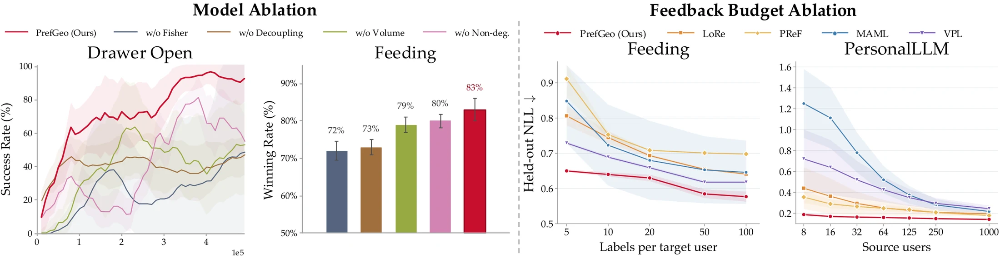
A meaningful, reusable reward basis
We relate learned reward differences to three semantic attributes: approach progress, task progress, and effort economy. On source tasks, every method prefers segments with more of each attribute. On the unseen target task, only PrefGeo keeps this alignment. LoRe and VPL weaken or even reverse it, for example by favoring less efficient motion.
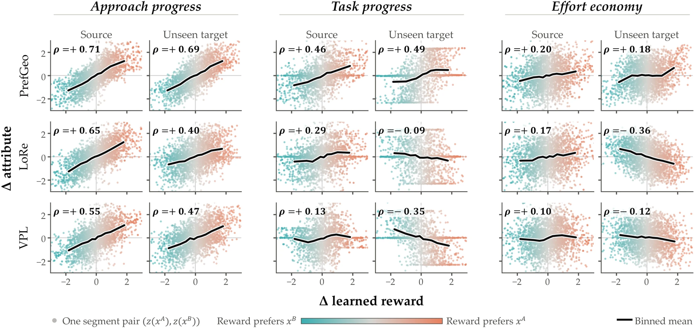
The objective never observes these attributes, yet each PrefGeo component aligns with a single one. The volume term favors a compact basis, and the coherence penalty discourages two components from encoding the same criterion.
LoRe's basis instead mixes approach and task progress across two components and has no direction for effort economy. No reweighting of it can express a preference for efficient motion.
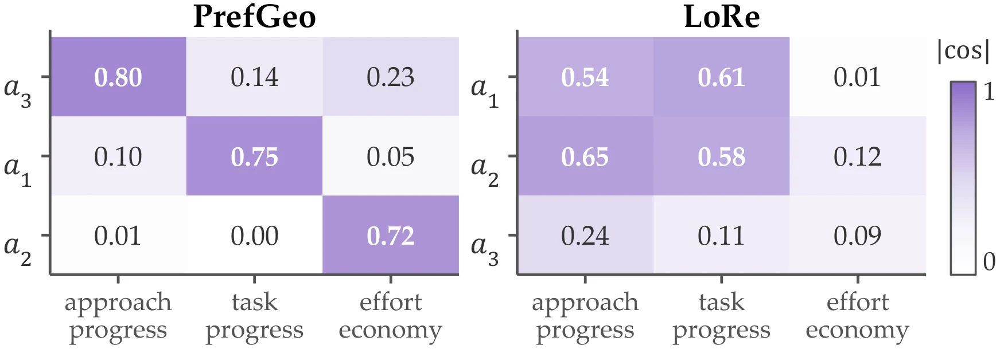
Real-world experiments
We deploy PrefGeo on a Franka arm starting from π0.5-DROID. Each of four tasks is held out as the target, with 100 preference pairs per source task and only 20 on the target. PrefGeo raises the average success rate from 22.5% to 67.5%.
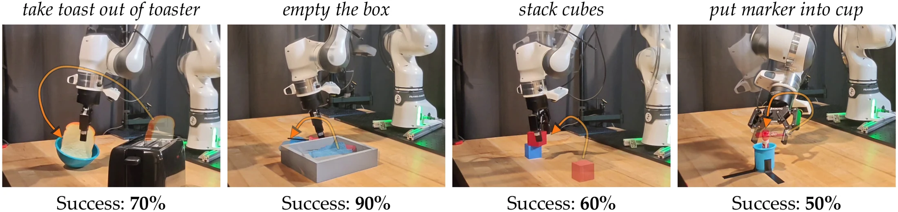
| Policy | Toast | Box | Cubes | Marker | Average |
|---|---|---|---|---|---|
| π0.5-DROID (zero-shot) | 2/10 | 4/10 | 2/10 | 1/10 | 22.5% |
| + LoRe (20 target labels) | 1/10 | 5/10 | 2/10 | 3/10 | 27.5% |
| + PrefGeo (20 target labels) | 7/10 | 9/10 | 6/10 | 5/10 | 67.5% |
In a user study on physical robot-assisted feeding with a Kinova Jaco arm, the reward basis is recovered in simulation from 40 simulated source users. Each of 8 participants then provides only 10 preference labels.
Participants interacted with Base, LoRe, and PrefGeo policies in a blind, randomized order and rated PrefGeo significantly higher in satisfaction than both (Friedman χ²(2) = 13.07, p = 0.001; Holm-corrected post-hoc p < 0.05).
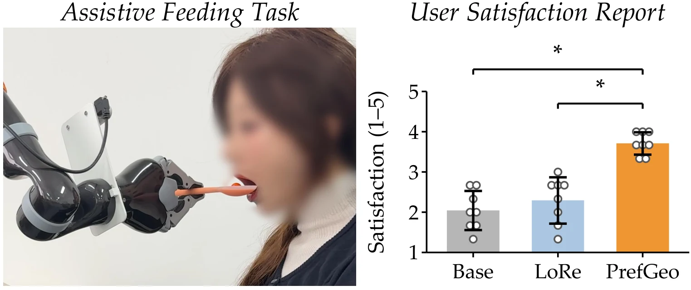
BibTeX
@inproceedings{anonymous2027prefgeo,
title = {PrefGeo: Generalizing Preference Learning Across
Contexts via Geometric Reward Factorization},
author = {Anonymous},
booktitle = {Submitted to the International Conference on
Learning Representations (ICLR)},
year = {2027},
note = {Under review}
}The full citation will be available after the review period.